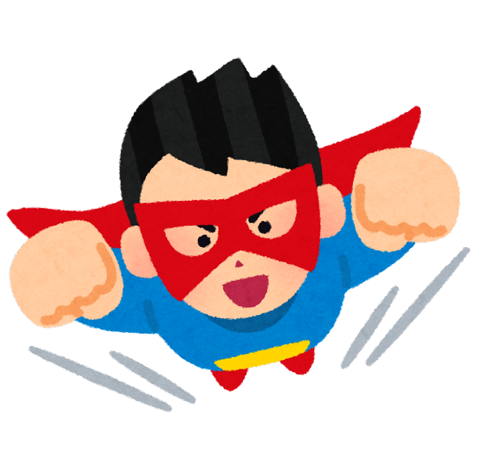

僕のヒーローアカデミア
作者:堀越耕平
連載媒体:週刊少年ジャンプ
あらすじ:誰もが何かしらの超常能力・"個性"を持つようになった世界！"個性"を悪用する敵＜ヴィラン＞を、圧倒的な力で取り締まる「ヒーロー」は皆の憧れの存在となっていた！主人公・緑谷出久（通称「デク」）もまた「ヒーロー」になることを夢見る少年だったのだが...!?

ここは私のおすすめのジャンプ漫画を紹介します。
作者:堀越耕平
連載媒体:週刊少年ジャンプ
あらすじ:誰もが何かしらの超常能力・"個性"を持つようになった世界！"個性"を悪用する敵＜ヴィラン＞を、圧倒的な力で取り締まる「ヒーロー」は皆の憧れの存在となっていた！主人公・緑谷出久（通称「デク」）もまた「ヒーロー」になることを夢見る少年だったのだが...!?
作者:赤坂アカ(原作)、横槍メンゴ(作画)
連載媒体:週刊ヤングジャンプ/ジャンプ+(一週遅れ、木曜更新)
あらすじ:地方都市で、産婦人科医として働くゴロー。芸能界とは無縁の日々。
一方、彼の“推し”のアイドル「Ｂ小町」のアイは、スターダムを上り始めていた。
そんな二人が“最悪”の出会いを果たし、運命が動き出す…!?
“赤坂アカ×横槍メンゴ”の豪華タッグが新たな切り口で芸能界を描く衝撃作!!
作者:藤巻忠俊
連載媒体:週刊少年ジャンプ
あらすじ:バツイチ子持ちの大狼十三は、子供の頃に組織に拾われた伝説の殺し屋。ある事件で謎の生物兵器に刺されて、中学生の姿になった十三は中学校へ…。中身はオジサン中学生の、学園アサシンやり直しコメディ、スタート！
作者:
連載媒体:週刊少年ジャンプ
あらすじ:昔から「幻妖」と呼ばれる生き物が見えた夜島学郎。彼が入学した高校には誰も知らない部屋があった。そこに住んでいたのは「鵺」呼ばれるゲーム好きの女の幻妖。彼女は何年も待っていた。この部屋を誰かが見つけるのを。鵺と出会った学郎の、学園を舞台にした新たな現代陰陽師譚、少年ジャンプにて開幕